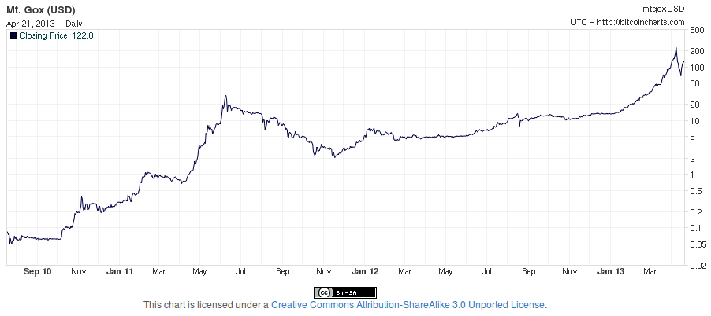
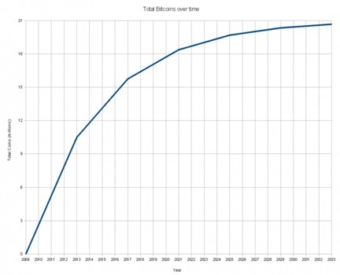
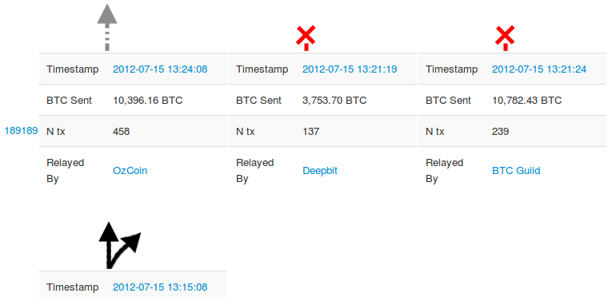
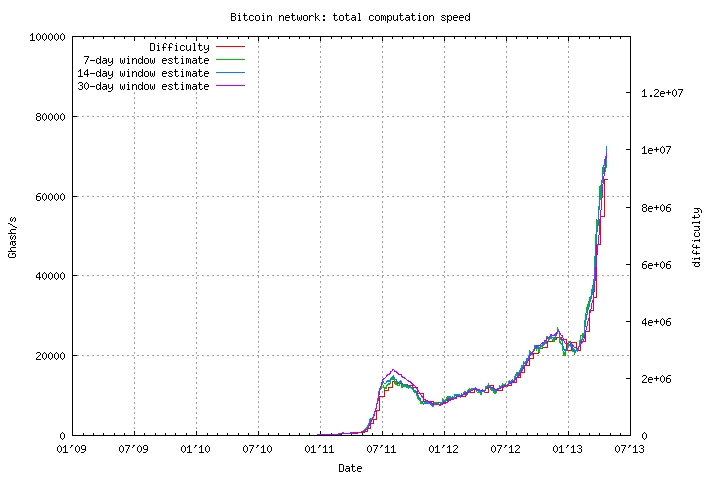

What is Bitcoin,
and what can it be used for?
CC BY
Some quotes
The Most Dangerous Project We've Ever Seen
-Jason Calacanis
Bitcoin Will Probably Kill Everything
-Brett Michael Dykes
We make money democratic
-Amir Taaki
What is money? Is Bitcoin money?
According to Wikipedia Money is
- a medium of exchange
- a unit of account
- and a store of value
Money: Medium of exchange
Intermediate exchange of goods
Bitcoin: Medium of exchange
Transactions are:
- Fast, only a few seconds
- Cheap, currently about 40 öre
- Unstopable
- Almost anonymous
- Non-reversible
Money: Unit of account
- Divisible into smaller units without loss of value
- Fungible: units are interchangable
- Verifiably countable
Bitcoin: Unit of account
- Divisible down to 0.00000001 Bitcoins (a 'Satoshi')
- All bitcoins are the same
- Cryptologicaly countable
Money: Store of value
Should not rot
Should be scarce
Should not be declared null and void...
Bitcoin: Store of value
Digital assets never rot
Bitcoins are scarce (max 21 million)

Currently ~11.1 million

Yes, bitcoin can work as money!
Bad money drives out good (if they exchange for the same price)
How are they created?
- 25 new Bitcoins are created on average each 10 minutes, through a process called "mining"
- Mining is important, since it was the way Bitcoins were distributed at the start
- Without mining, Bitcoin would be very hard to bootstrap
Bitcoin only exists on the internet
Well, not really, but still...
What can you do with Bitcoins today? (1/2)
- Buy and sell them, most often at MtGox
- You can also buy and sell Bitcoins in Sweden
- Buy and sell Bitcoin options, at now defunct Bitcoinica
- Buy shares, bonds and options in Bitcoin companies at now defunct GLBSE
- Betting
- Rewards for work
- Anonymous donations (Anonymous, Occupy movement, prometheusfusionperfection.com, PirateBay)
What can you do with Bitcoins today? (2/2)
What can you do with Bitcoins in the future? (1/2)
What can you do with Bitcoins in the future? (2/2)
Bitcoin could possibly replace
- Creation of money (the "Fed")
- Storage and accounting of money (banks)
- Transaction of money (SWIFT, SEPA, Western Union, PayPal)
- Gold and Silver
- Cash (coins and banknotes)
- Stocks
- Bonds
Satoshi Nakamoto
- Satoshi means "wisdom" or "reason"
- No references to him outside Bitcoin or p2p foundation
- Created an anonymous persona, then (starting in 2007) wrote 31 000 lines of complex C++ code...
- Changed spell checker from US to English
- Stopped participating in the forum in December 2010
- Talked to Gavin Andreesen until April or so 2011
Satoshi have moved on to other things. -Gavin Andreesen
- IxCoin
- IoCoin
- SolidCoin
- DevCoin
- ExpoCoin / KingCoin
- BribeCoin / PimpCoin / PornCoin / ...
Possible attacks against Bitcoin?
- Stop the flow of money to the exchanges
- Regulate it to death
- DDoS the mining pools or exchanges
- Fork the blockchain repeatedly
- Buy all Bitcoins and destroy them
- Force volatility of value
- Infiltrate the code base
- Infiltrate the alert machinery
- Ban it, but is Bitcoin a currency, an asset, a security, or...?
How does Bitcoin work?
The first three times you think you understand Bitcoin, you don't.
-Dan Kaminsky
- Example: 13dhfDmPEvMXCBs44rU6vCuTDK42rVoTtw
- Is a public and private key pair
- Can be created offline
- You can have any number of addresses, and they cannot be tracked back to you
Addresses, deeper
- 34 characters or less
- Case sensitive
- O0Il are never used
- Contains checksums, 2^-32 risk of misstyped address being accepted
- Is the 160-bit hash of the public part of a key pair
- Both the address, public and private key are kept in the wallet
- Create your own
- A collection of inputs and outputs
- The private key is needed to sign a transaction with a Bitcoin input address
- The inputs are outputs from a previous transaction
- An output contains a value and a script, which can be just an address, or a turing-incomplete program!
- Inputs = outputs + fee
- If you want to send less than the inputs, then your client will send back the change to you in an output
- Forth-like
- Simple, stack-based
- Processed from left to right
- Purposefully not Turing-complete, with no loops
A script is essentially a list of instructions recorded with each transaction that describe how the next person wanting to spend the Bitcoins being transferred can gain access to them.
Blocks
Contains a header + a list of one or more (typically 100-700) transactions
The block header contains:
- A coinbase transaction, which rewards the miner with 25 Bitcoins
- A hash of the previous block, which gives us a block chain (Merkle Tree)
- A hash of the list of transactions (will be unique for each miner)
- A nonce, incremented after each failed hash
The genesis block
Contains the text:
The Times 03/Jan/2009 Chancellor on brink of second bailout for banks
The block chain
- Currently contains 233 000 blocks
- Is over 7 GB in size and grows with ~25 MB/day
- Represents more than 10^20 accumulated calculated hashes
The chain forks quite often, on average several times a day

Reasons for forks
- Network problems
- Bugs
- Protocol changes
- Chance (Network latency)
- Malice?
Hashing power statistics

- Lock time --> transactions can be replaced until a set block is created
- I agree to put my money in, if everyone puts their money in and the outputs are this
- I agree to put my money in, as long as everyone puts their money in, but I don't care what's done with the output
- I agree, as long as my output is what I want; I don't care about the others
- An output can require two signatures to be spent
Contract examples
- Providing a deposit
- Escrow and dispute mediation
- Assurance contracts
- Using external state - Bitcoin Oracles
- Trading across chains
- Smart property
- Rapidly-adjusted (micro)payments to a pre-determined party
THE END
mats.henricson@crisp.se & zac@cyberzac.se